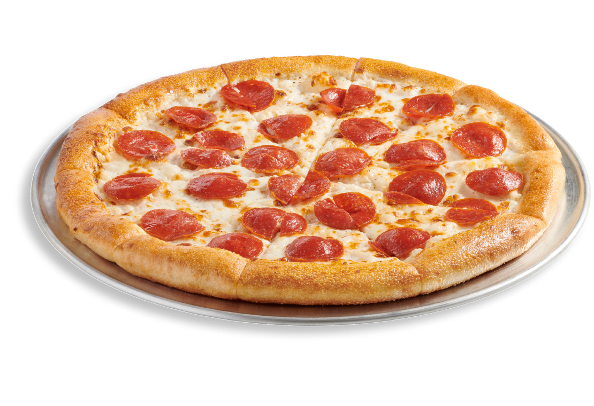

Pizza Recipe

Pepperoni Pizza
Pepperoni pizza is the most popular pizza in the world.
This is a timeless classic and with this recipe, you will be able to make it yourself!
Ingredients
- Pizza Dough
- Pizza Sauce
- Pepperoni
- Mozzarella Cheese
- Italian Seasoning
- Parmesan Cheese (optional)
- Red Pepper Flakes (optional)
Instructions
- Preheat the Oven - Set the oven to 350 degrees. you can do your baking on a pizza stone, or a non stick pizza pan.
NOTE: if using a pizza stone, make sure to leave it in the oven to heat up. You will also need a pizza peel to transfer
your pizza to your stone.
- Prep the Pizza Dough - Roll out the dough to your desired thickness. If using frozen dough, it should make roughly a 12" pizza.
- Spread the Pizza Sauce - Use a spoon so spread the pizza sauce onto the dough. Leave about 1/2 inch around the edge for a nice pizza crust.
- Add the Cheese - Evenly spread the mozzarella cheese across the pizza sauce. Take care to spread the cheese around the edge of where you spread the sauce
This way you are able to lock in the sauce so that it does not get on the crust and burn.
- Add the Pepperoni - Place the pepperoni on the pizza side by side, one by one. Moving from the outer edge to the inside in a spiral pattern.
This is where you get to be creative. Try not overlapping the peperoni, or they may not crisp up in the baking process. But you can put as many or as few pepperonis
as you like
- Bake the Pizza - Bake the pizza for 10 - 15 minutes. Check the color of the crust, as well as the crispness of the bottom of the crust.
- Cool the Pizza - This is the hardest step. Once the pizza is done baking, you must let it cool before you slice and serve. 5 minutes should be good.
This way you don't burn yourself!
- Slice and Serve - Slice the pizza into as many or as little slices as you want. Once served you can optionally add parmesan cheese or
crushed red pepper as you see fit. ENJOY!
Back To Main